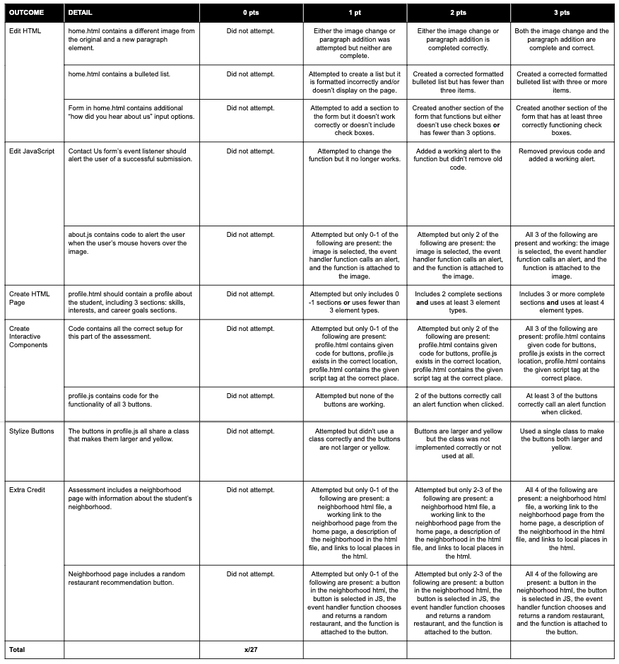

Module 3 Assessment
Introduction
It’s time to practice and solidify the skills you learned in this module.
Independent work
This is an individual assignment. Please do not collaborate with your peers or share your work until the project is reviewed as a class.
Setup
Click here to download the code files you need to for this project.
Open the folder in VSCode.
Open home.html in your browser (paste the path, use live-server, etc.)
In home.html edit line 18 to say
<p>Hello World</p>. Reload this file in your web browser (CMD/CTRL + R). Ensure that you can see the change you made reflected in the browser.
Part 1: Edit HTML
Change the following things in home.html.
Change the image of the Devmountain logo to an image of either a rubber duck or a cat of your choice.
Add another paragraph somewhere on the page. The content of the paragraph should be a message welcoming the user to the website.
Add a bulleted list (
ul) of compliments to the user, with at least 3 bullet points.Add a form input to the “Contact Us” form that asks the user how they heard about this website. They should be able to check boxes that include “Google”, “A friend”, or “Other”.
Part 2: Edit Javascript
Change the event listener that is listening for the Contact Us form to submit. Instead of doing a
console.logmessage on submit, the form should alert the user that the form has been submitted successfully. Use the alert function in Javascript.Add an event listener that listens for a mouseover event. When the user mouses over the picture on the page (cat or rubber duck) the page should alert give the user a compliment.
Part 3: Create HTML Page
Edit the file called profile.html. Make a profile about yourself.
The profile should feature your skills, interests, and career goals. Be creative and try practice using basic HTML elements like headings, paragraphs, lists, and forms, as well as CSS concepts such as classes and flexbox.
Feel free to copy the head and nav components from the home.html
page so that your profile has the same look and feel as the other pages on the website.
Part 4: Create Interactive Components
Copy the following HTML into your profile somewhere.
<button id="color">My Favorite Color</button> <button id="place">My Favorite Place</button> <button id="ritual">My Favorite Ritual</button>
Next, create a new file called profile.js. Make sure it is
in the same location (same folder) as the profile.html file.
Then, add a script tag at the very end of the
<body>
element (just above the closing tag </body>) that connects
profile.js to your HTML file.
In profile.js, create event listeners that check for a click on each of these buttons.
If a user clicks on “My Favorite Color”, it should alert the user of your favorite color, and so on.
Part 5: Stylize buttons
Add a class to each button element from the previous section. Then, add CSS to
styles.css that makes the buttons larger and yellow.
You are encouraged to do independent research how how to change the size and color
of HTML buttons using CSS. Get practice searching the internet for proper documentation on HTML/CSS!
Extra Credit: Another Page
Add another link in the homepage’s navigation section.
Create a new page for the website about your neighborhood.
The page should feature a short description of your neighborhood, links to local restaurants and parks, and anything else you’d like to include.
Create a button that allows the user to request a random restaurant recommendation. Add an event listener in Javascript listens for a click on the button. When the button is clicked, your Javascript should call a new function that you write, which chooses a random restaurant for the user.
You can read more about how to choose a random item from a Javascript array here.
You’re done!
Be sure to push your code to GitHub for this assessment!
To pass this assessment you must score at least 19/27.
